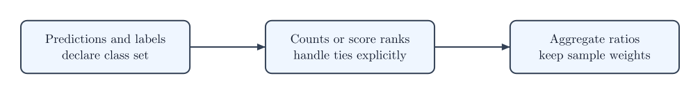
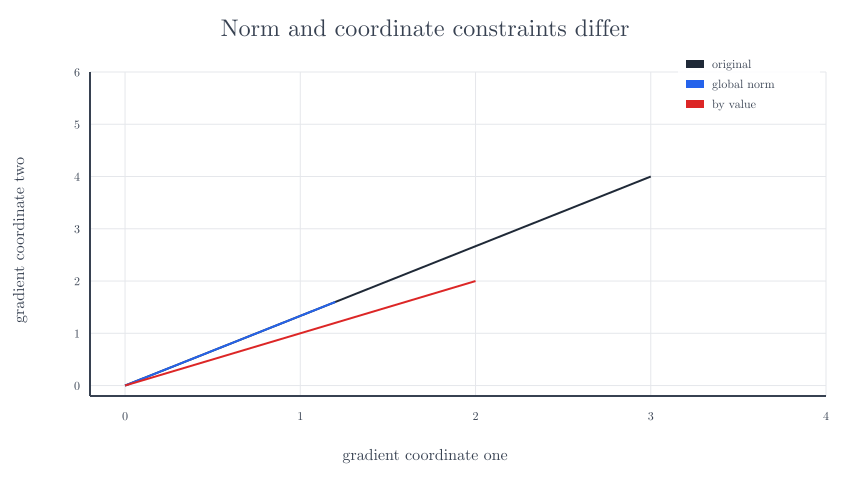
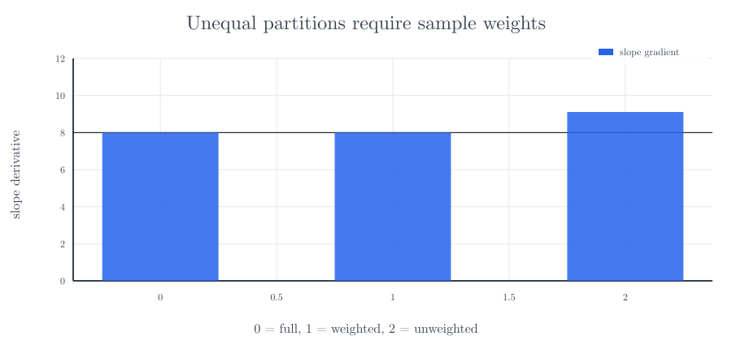
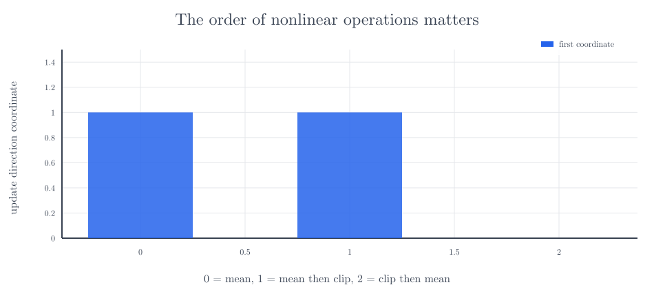

Gradient Clipping and Accumulation: Geometry and Weighting
Abstract
Large gradients can destabilize an update, while memory limits may require a logical batch to be processed as several smaller batches. We need to specify both the clipping geometry and the weights used when recombining microbatch means. Exact two-coordinate vectors expose value versus norm clipping; an unequal partition of seven observations checks accumulation against a full-batch derivative. A cancellation example proves that clipping before averaging gives a different answer. These controlled constructions do not estimate a model's accuracy or imply a bound on every adaptive optimizer's step.
The method
Global norm clipping concatenates all parameter gradients conceptually and applies one shared scale. At threshold C>0,
This is the Euclidean projection onto the radius-C ball. It preserves direction for a nonzero vector and leaves zero unchanged. Clipping each tensor separately defines a different constraint; value clipping constrains each coordinate and can change direction. For plain SGD the update norm is at most eta*C after global clipping. Momentum memory and adaptive rescaling mean that bound does not automatically apply to their updates.
If microbatch j contains n_j samples and g_j is the gradient of its mean loss, the logical full-batch mean gradient at fixed parameters is
Use GradientAccumulator.add(g_j,n_j), take mean(), clip once if desired, and call step() once. No optimizer update or parameter-dependent state change may intervene if equivalence to a full-batch derivative is intended. Nonseparable losses, batch normalization and random layers can also make microbatch and full-batch forwards different. Accumulation does not reproduce those forwards merely by choosing correct weights. Reset the accumulator after applying an update. An empty mean is an error, not a zero-gradient step.
The concept diagram below is drawn by dm::graphics::Diagram. Its editable C++
source is the complete block below; regeneration uses the same datamunge toolchain
as the numerical examples. Exports consume the saved local SVG.
#include <dm/dm.hpp>
int main() {
std::filesystem::create_directories("build");
dm::graphics::Diagram diagram;
diagram.node("n0", {0.0, 0}, "Microbatch gradients\nsample-count weights");
diagram.node("n1", {5.5, 0}, "One logical mean\nfixed parameter state");
diagram.node("n2", {11.0, 0}, "Global clip then step\nreset accumulator");
diagram.edge("n0", "n1").edge("n1", "n2");
diagram.save_svg("build/gradient_clipping_accumulation_concept.svg");
}
Simple examples
A vector with norm five
For g=(3,4), a global norm limit two gives (1.2,1.6), with norm two and unchanged direction. Value clipping to [−2,2] gives (2,2), with norm sqrt(8)>2 and a different direction. Supplying the two coordinates as separate scalar tensors still uses the same global norm when calling clip_by_global_norm().
#include <dm/dm.hpp>
int main() {
const auto g = dm::nn::from_vector(std::vector<double>{3, 4});
const auto norm = dm::nn::clip_by_global_norm({g}, 2);
const auto value = dm::nn::clip_by_value({g}, -2, 2);
const auto a = norm.first[0].to_vector<double>(), b = value[0].to_vector<double>();
if (std::abs(a[0] - 1.2) > 1e-14 || std::abs(a[1] - 1.6) > 1e-14)
throw std::runtime_error("norm clipping mismatch");
dm::dstruct::DataFrame t;
t.add_column("rule", std::vector<std::string>{"original", "global norm", "by value"});
t.add_column("x", std::vector<double>{3, a[0], b[0]});
t.add_column("y", std::vector<double>{4, a[1], b[1]});
t.add_column(
"norm",
std::vector<double>{
norm.second, dm::nn::global_norm(norm.first), dm::nn::global_norm(value)});
auto p = dm::graphics::RPlot::create();
p.lines({0, 3}, {0, 4}, "original", {31, 41, 55})
.lines({0, a[0]}, {0, a[1]}, "global norm", {37, 99, 235})
.lines({0, b[0]}, {0, b[1]}, "by value", {220, 38, 38})
.title("Norm and coordinate constraints differ")
.x_label("gradient coordinate one")
.y_label("gradient coordinate two")
.x_limits(-.2, 4)
.y_limits(-.2, 6);
std::filesystem::create_directories("build");
p.size(850, 480).save_svg("build/clipping_geometry.svg");
std::print("{}\n", t.to_md(6));
}| rule | x | y | norm |
|---|---|---|---|
| original | 3.0 | 4.0 | 5.000000 |
| global norm | 1.2 | 1.6 | 2.000000 |
| by value | 2.0 | 2.0 | 2.828427 |

Unequal microbatches need sample weights
At slope three and intercept minus one, use y=2x+1 on the seven integer inputs −3 through three. The mean squared-error gradient is exactly (8,−4). Partition into sizes 2,3,2 while keeping the parameters fixed. The unweighted average gives the three-example middle batch the same weight as a two-example outer batch; the slope gradient therefore differs from eight. This example uses a separable deterministic loss.
#include <dm/dm.hpp>
int main() {
auto w = dm::nn::from_vector(std::vector<double>{3}).requires_grad_(),
b = dm::nn::from_vector(std::vector<double>{-1}).requires_grad_();
const auto x = dm::nn::from_vector(std::vector<double>{-3, -2, -1, 0, 1, 2, 3}),
y = dm::nn::from_vector(std::vector<double>{-5, -3, -1, 1, 3, 5, 7});
dm::nn::GradientAccumulator weighted, unweighted;
std::int64_t start = 0;
for (int size : {2, 3, 2}) {
std::vector<std::int64_t> ids;
for (int i = 0; i < size; ++i)
ids.push_back(start++);
const auto bx = dm::nn::take_rows(x, ids), by = dm::nn::take_rows(y, ids);
const auto g = dm::nn::grad(dm::nn::mean(dm::nn::square(bx * w + b - by)), {w, b});
weighted.add(g, size);
unweighted.add(g);
}
const auto full = dm::nn::grad(dm::nn::mean(dm::nn::square(x * w + b - y)), {w, b}),
a = weighted.mean(), c = unweighted.mean();
for (std::size_t j = 0; j < 2; ++j)
if (std::abs(a[j].item<double>() - full[j].item<double>()) > 1e-13)
throw std::runtime_error("weighted accumulation differs");
dm::dstruct::DataFrame t;
namespace nn = dm::nn;
auto w_full = w.detach().clone().requires_grad_(), b_full = b.detach().clone().requires_grad_();
nn::Optimizer micro({w, b}, .1, {.kind = nn::OptimizerKind::Adam});
nn::Optimizer whole({w_full, b_full}, .1, {.kind = nn::OptimizerKind::Adam});
nn::GradientAccumulator batches;
bool rejected = false;
try { micro.step(batches.mean()); }
catch (const std::logic_error&) { rejected = true; }
if (!rejected || micro.iterations() != 0 || w.item() != 3.)
throw std::runtime_error("An empty accumulator advanced Adam");
rejected = false;
try { batches.add(full, 0); }
catch (const std::invalid_argument&) { rejected = true; }
if (!rejected || batches.count() != 0 || batches.total_weight() != 0)
throw std::runtime_error("Invalid microbatch weight changed the accumulator");
for (int step = 0; step < 4; ++step) {
std::int64_t row = 0;
for (int size : {2, 3, 2}) {
const auto bx = nn::slice(x, {row}, {size}), by = nn::slice(y, {row}, {size});
batches.add(nn::grad(nn::mse(bx * w + b, by), {w, b}), size);
row += size;
}
micro.step(batches.mean());
batches.reset();
whole.minimize(nn::mse(x * w_full + b_full, y));
const auto a_state = micro.state(), b_state = whole.state();
if (a_state.size() != b_state.size() || micro.iterations() != step + 1 ||
batches.count() != 0 || batches.total_weight() != 0 ||
!(std::abs(w.item() - w_full.item()) < 1e-12 && std::abs(b.item() - b_full.item()) < 1e-12))
throw std::runtime_error("Accumulated and full-batch Adam updates differ");
for (std::size_t j = 0; j < a_state.size(); ++j)
if (a_state[j].first != b_state[j].first ||
!(std::abs(a_state[j].second.item() - b_state[j].second.item()) < 1e-12))
throw std::runtime_error("Accumulated and full-batch Adam state differs");
}
std::print("Four accumulated Adam updates matched full-batch weights and slots. Empty and invalid batches were rejected.\n\n");
t.add_column(
"method", std::vector<std::string>{"full batch", "sample weighted", "unweighted batches"});
t.add_column(
"slope_gradient",
std::vector<double>{full[0].item<double>(), a[0].item<double>(), c[0].item<double>()});
t.add_column(
"bias_gradient",
std::vector<double>{full[1].item<double>(), a[1].item<double>(), c[1].item<double>()});
auto p = dm::graphics::RPlot::create();
p.bars(
{0, 1, 2}, t.numeric_column("slope_gradient").values(), "slope gradient", {37, 99, 235}, .5)
.abline_h(8)
.title("Unequal partitions require sample weights")
.x_label("0 = full, 1 = weighted, 2 = unweighted")
.y_label("slope derivative")
.y_limits(0, 12);
std::filesystem::create_directories("build");
p.size(900, 430).save_svg("build/clipping_accumulation.svg");
std::print("{}\n\nAccumulated sample weight: {:.0f}.\n", t.to_md(9), weighted.total_weight());
}Four accumulated Adam updates matched full-batch weights and slots. Empty and invalid batches were rejected.
| method | slope_gradient | bias_gradient |
|---|---|---|
| full batch | 8.00000000 | -4 |
| sample weighted | 8.00000000 | -4 |
| unweighted batches | 9.11111111 | -4 |
Accumulated sample weight: 7.

Checking the theory
Clipping does not commute with averaging
Take two equally weighted gradients (3,0) and (−1,0), with norm threshold one. Their mean is (1,0), already on the boundary. Clipping that mean leaves it unchanged. Clipping each microbatch first gives (1,0) and (−1,0), whose average is zero. Thus these pipelines can produce different updates even at identical weights. Clipping each microbatch may be intentional for other objectives, but it does not reproduce the clipped full-batch gradient. In particular, per-example clipping in privacy methods has a different purpose and must not be replaced by the aggregate operation here.
#include <dm/dm.hpp>
int main() {
const auto a = dm::nn::from_vector(std::vector<double>{3, 0}),
b = dm::nn::from_vector(std::vector<double>{-1, 0});
dm::nn::GradientAccumulator raw, clipped;
raw.add({a});
raw.add({b});
clipped.add(dm::nn::clip_by_global_norm({a}, 1).first);
clipped.add(dm::nn::clip_by_global_norm({b}, 1).first);
const auto mean = raw.mean(), after = dm::nn::clip_by_global_norm(mean, 1).first,
before = clipped.mean();
dm::dstruct::DataFrame t;
t.add_column(
"pipeline", std::vector<std::string>{"mean gradient", "mean then clip", "clip then mean"});
t.add_column(
"first_coordinate",
std::vector<double>{
mean[0].to_vector<double>()[0],
after[0].to_vector<double>()[0],
before[0].to_vector<double>()[0]});
auto p = dm::graphics::RPlot::create();
p.bars(
{0, 1, 2},
t.numeric_column("first_coordinate").values(),
"first coordinate",
{37, 99, 235},
.5)
.title("The order of nonlinear operations matters")
.x_label("0 = mean, 1 = mean then clip, 2 = clip then mean")
.y_label("update direction coordinate")
.y_limits(0, 1.5);
std::filesystem::create_directories("build");
p.size(950, 430).save_svg("build/clipping_order.svg");
std::print("{}\n", t.to_md(3));
}| pipeline | first_coordinate |
|---|---|
| mean gradient | 1 |
| mean then clip | 1 |
| clip then mean | 0 |

Conclusion
Clipping specifies a constraint geometry, and accumulation specifies the weighting of mean gradients at a fixed model state. Use one well-defined logical update, preserve sample weights for uneven batches, and choose clipping order deliberately. These examples validate identities and a counterexample, rather than promising a universal training or privacy guarantee.
References
- Pascanu, R., Mikolov, T. and Bengio, Y. (2013). On the difficulty of training Recurrent Neural Networks. Gradient norm clipping and exploding gradients.
- TensorFlow authors. clip_by_global_norm. Shared-norm clipping semantics.